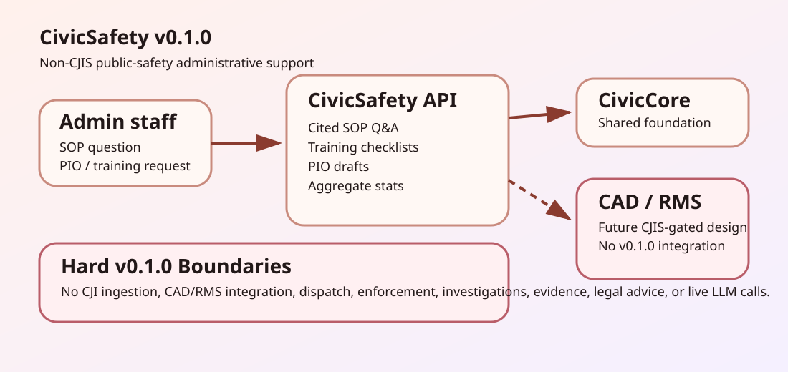

For Staff
Draft policy answers, training checklists, PIO updates, and aggregate stats that supervisors verify before use.
CivicSafety helps public-safety administrative staff answer SOP questions with citations, prepare training checklists, draft PIO updates, and summarize aggregate public statistics.
Draft policy answers, training checklists, PIO updates, and aggregate stats that supervisors verify before use.
FastAPI runtime pinned to civiccore==0.2.0, deterministic tests, and no CAD/RMS writes.
CJI-marked inputs are blocked; v0.1.0 stays on the non-CJIS administrative side.

CivicSafety v0.1.0 does not ingest CJI, integrate with CAD/RMS, support dispatch, drive enforcement, investigate cases, manage evidence, provide legal advice, call live LLMs, or ship public-safety connector runtime.
Repository: github.com/CivicSuite/civicsafety